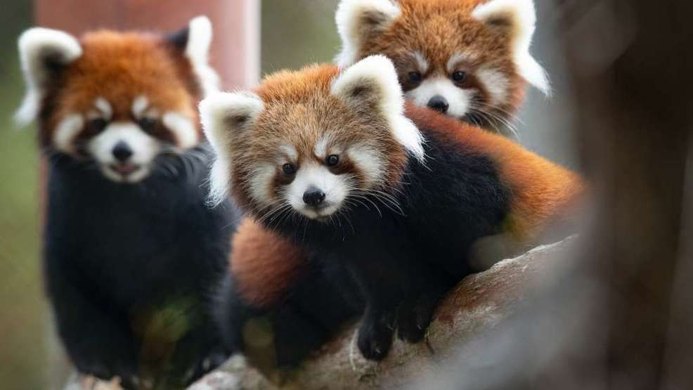

小熊猫!

小熊猫（学名：Ailurus fulgens），也叫红熊猫或九節狼，是一种小型哺乳动物，原产于喜马拉雅山脉东部和中国西南地区[1]，有着红褐色的皮毛和一条长而蓬松的尾巴，且由于其前肢较短，步态摇摆蹒跚。小熊猫长得比家猫略大，但躯干更长且体重较重。它是一种树栖动物，主要以竹笋为主食，但也会杂食禽蛋、鸟类、昆虫和小型哺乳动物。在野外自然条件下它是一种独居动物，黄昏到黎明是其主要活动期，而白天大部分时间处于静栖状态。
由于野外成年生存数量预估不足10000只，小熊猫已被國際自然保護聯盟归为瀕危物種。尽管小熊猫受到其范围内国家的法律保护，但是面临棲息地破壞、棲息地零碎化、偷獵以及近交衰退的种种威胁，其数量仍在不断减少[1][4]。

小猫熊是小猫熊属和小猫熊科中唯一现仍存活的物种。它最开始被列为浣熊科和熊科，但系统发生学研究支持小熊猫所属的小猫熊科为一独立演化支系，并指出小熊猫有两类亞種[3]，且和鼬科、浣熊科同属鼬总科[5]。小熊猫与现生熊科动物中相对较基群的大熊猫并无紧密关系。
| Year | Wild[118] | Change | Captivity[52] | Change | Total | Change |
|---|---|---|---|---|---|---|
| 1976 | 1,000 | n/a | n/a | n/a | n/a | n/a |
| 1985 | 800–1,200 | n/a | n/a | n/a | n/a | n/a |
| 1987 | >1,000 | n/a | n/a | n/a | n/a | n/a |
| 1994 | 1,200 | n/a | n/a | n/a | n/a | n/a |
| 1995 | 1,000 | −200 | n/a | n/a | n/a | n/a |
| 2003 | 1,596 | +596 | 164[119] | n/a | 1,760 | n/a |
| 2012 | n/a | n/a | 341[120] | +178 | n/a | n/a |
| 2013 | 1,864[121] | +268 | 375[119][122] | +34[122] | 2,239 | +479 |
OH BTW! - Microbes in panda waste are being investigated for their use in creating biofuels from bamboo and other plant materials.